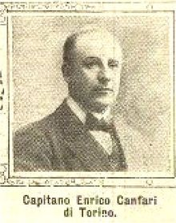
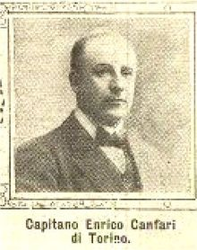

The history of Juventus F.C. covers over 110 years of the football from the club based in Turin, Italy. Established in 1897, the club would eventually become the most successful team in the history of Italian football and amongst the elite football clubs of the world Iuventūs is Latin for "youth". According to the International Federation of Football History & Statistics, an international organization recognized by FIFA, Juventus were Italy's best club of the 20th century and the second most successful European club in the same period.
 
